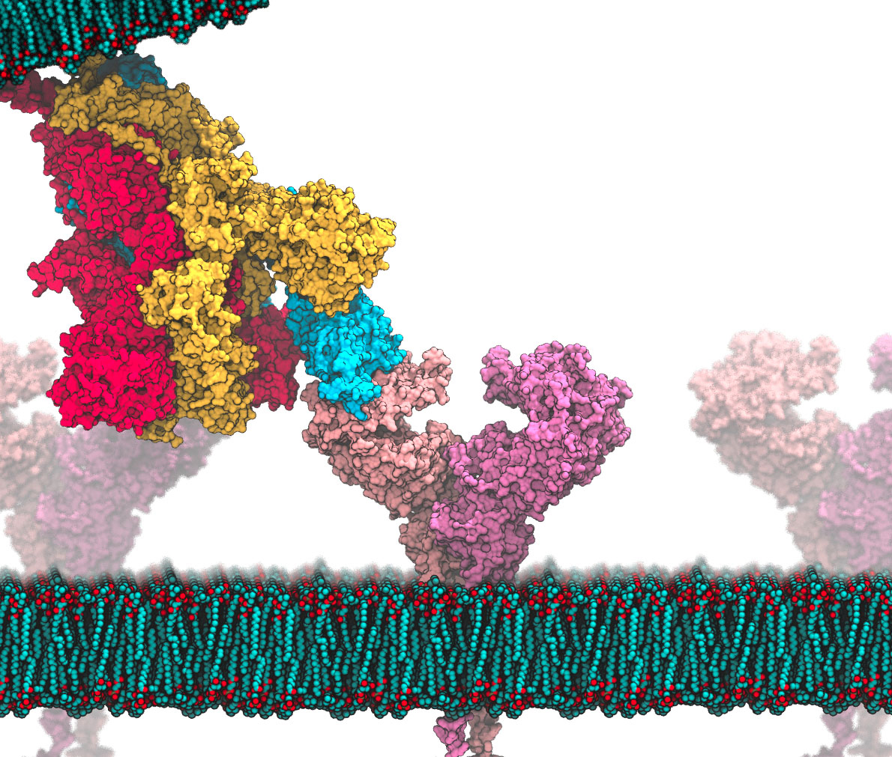

Due to the outbreak of Covid-19, part of the summer of 2021 was spent under Dr. Derek Cashman determining potential molecules that could bind to the receptor of the Coronavirus protein to prevent it from entering the cell. Over 300 potential molecules were created and tested using MOE. It was found that neomycin with a chlorine group on the 8th R-site had the most effective binding energy and was not toxic. Next steps would include creating and testing the drug in vitro.
This was an independent research project, culminating in the writing and presentation of a research paper. See abstract in the appendix section.

In order to understand the introductory concepts of machine learning, such as optimization, data organization and visualization, different types of data, and fitting, a Linear Regression was created with the goal of predicting the price of a car depending on a variety of variables like mileage and age. Initial data exploration was done with the creation of scatter and CAT plots. I created a Linear Regression model using Sci-Kit Learn and predicted the correct price with 85% accuracy. Next steps would be using different models and more data to predict with better accuracy.

This was one of the first html/css/javascript projects I have done. This was done with my brother using a tutorial and it was meant to serve as a start to my website designing journey.

This was a basic project that I created in high school. The goal was to create a functional game of hang-man.

This was an independent research project conducted during the AP Capstone Program. See abstract in the appendix section.
After taking Calculus AB because I could not take BC due to scheduling issues, I wanted to know more about BC topics. I took it upon myself to learn BC calculus during the summer and was really interested in Taylor Polynomials and how they can accurately fit various functions. As a result, I created a program that could create and graph a Taylor Polynomial for any differentiable function. This project was a learning experience that really taught me a lot about power series and how Taylor Polynomials work.
With the goal of learning about how AI is used in self-driving cars, I conducted an independent research project in which a K-nearest neighbors classifier and convolutional neural networks were used. A prediction accuracy of 95% was achieved using the convolutional neural network. However, this brought the idea of overfitting into the picture as 15 epochs were used. Therefore, I used validation data to ensure that the model was not over-fitting, confirmed because the validation accuracy was in the high 90s.
This was an independent research project with a goal of identifying the sentiment of a yelp review, whether it has a positive, neutral, or negative sentiment. After preprocessing the data, using Natural Language Processing techniques such as tokenization and removal of stop words, a Logistic Regression algorithm was used to create the model. The model yielded a prediction accuracy of 77%. Future steps would include using a neural network to create a better model and using validation data to ensure correct fitting of the model.
This was an independent research project with a goal of identifying the sentiment of a yelp review, whether it has a positive, neutral, or negative sentiment. After preprocessing the data, using Natural Language Processing techniques such as tokenization and removal of stop words, a Logistic Regression algorithm was used to create the model. The model yielded a prediction accuracy of 77%. Future steps would include using a neural network to create a better model and using validation data to ensure correct fitting of the model.
During these challenges, Tennessee Technological Institute’s unique cyber range was used to explore concepts such as Buffer Overflow, Cross-Site Scripting, and Integer Overflow. These tactics were used to gain unauthorized access to a virtual website. Code was then created to remedy these problems and make the site secure.